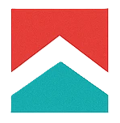
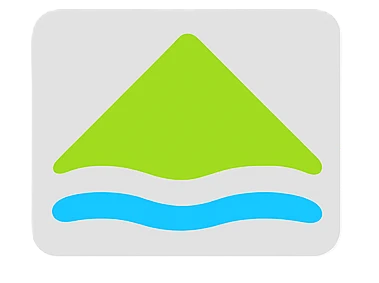
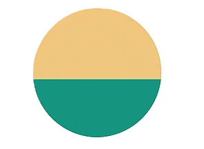
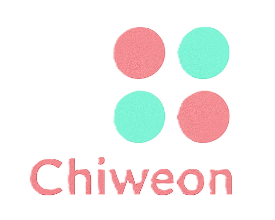
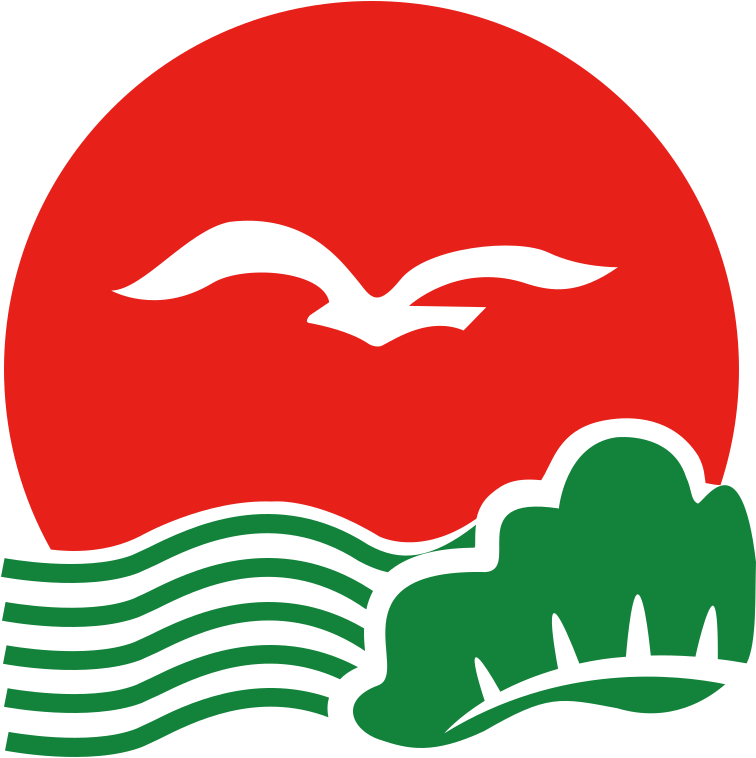

| 자치시 | ||
|---|---|---|
|
도청빈주시
|
강주시 |
 계성시 |
 군천시
군천시
|
 서진시
서진시
|
서해시 |
 약산시
약산시
|
전산시 |
 천주시
천주시
|
| 자치군 | ||
| 기도군 |
 낭원군 |
덕현군 |
| 모제군 | 반양군 |
 상안군 |
| 선곡군 | 저천군 |
 치원군 |
경기 · 충북 · 충남 · 경북 · 경남 · 덕남 · 덕북 · 강원 · 전북 · 제주
1. 개요
덕빈북도의 중앙부에 위치한 도농복합군이다. 면적은 422.928㎢이며, 총 인구는 75,274명이다. 서부의 염곡읍을 중심으로 효빈국제공항과 연계된 공항 신도시 개발이 대대적으로 추진되고 있다. 현재 염곡읍의 인구가 이미 기도읍을 추월하여 군 전체의 절반 이상을 차지하고 있으며, 2026년 7월 1일 자로 염곡읍 승격이 완료되어 지역 사회의 새로운 도약을 맞이하고 있다. 군청 소재지는 기도읍인데 돈은 다 염곡이 벌어온다. 행정 중심지는 기도읍이지만, 실질적인 인구 및 산업 중심은 완전히 염곡으로 넘어간 상태이다.
2. 상징
- 군화 (郡花): 백일홍 - 영원한 행복과 번영을 상징한다.
- 군목 (郡木): 은행나무 - 기도군의 굳건함과 장수를 의미한다.
- 군조 (郡鳥): 해오라기 - 맑고 깨끗한 생태 환경을 대변한다.
- 마스코트: 희망이 (Hui-mang-i) - 국제공항과 철도망을 상징하는 역동적인 형상이다.
3. 외국어 표기
- 영어: Gido-gun / Gido County
- 한자: 氣島郡
- 일본어: キド郡 (Kido-gun)
- 중국어: 奇祷县 (Qídǎo Xiàn)
4. 역사
기도 지역은 예로부터 농경 문화가 발달한 비옥한 땅이었으나, 현대에 들어 국제 교통의 요지로 환골탈태했다.
- 고대: 평야 지대를 기반으로 한 농업 문명이 발달했으며, 물자 교역의 중심지 역할을 수행했다.
- 통일신라/고려: '기현(奇縣)'으로 불리며 행정 구역의 기틀을 마련했다.
- 조선시대: '기도군(氣島郡)'으로 승격되어 현재의 명칭이 정착되었다.
- 현대: 강빈선 철도와 효빈국제공항의 건설로 인해 국제적인 교통 거점으로 급부상했다.
옆 동네 사람들이 다 부러워한다.
5. 지리
5.1. 자연지리
평탄한 구릉과 넓은 평야 지형이 주를 이룬다. 군 중앙을 흐르는 기도천이 젖줄 역할을 하며 주변에 비옥한 평야를 형성했다.
5.2. 기후
전형적인 중부 내륙 온대 기후로 사계절 변화가 뚜렷하다. 연중 강수량이 고른 편이라 농사짓기 좋다.
5.3. 도시구조
전통적인 행정 및 상업의 중심인 기도읍과, 신흥 국제도시로 성장 중인 염곡읍의 이원화된 구조를 보인다. 최근에는 공항 배후 단지로의 인구 쏠림이 가속화되고 있다.
5.4. 인구
1949-1990: 통계청 인구총조사, 1995-현재: 행정안전부 주민등록인구통계 (외국인 미포함)
총 인구 75,274명 중 염곡읍 인구가 43,321명으로 전체의 약 57%를 차지한다. 기도읍과 염곡읍을 합치면 군 전체 인구의 87%에 달할 정도로 인구 쏠림 현상이 극심하다.
| 행정구역 | 유형 | 인구(명) | 비율(%) | 특징 |
|---|---|---|---|---|
| 염곡읍 | 읍 | 43,321 | 57.55% | 공항 신도시, 2026년 7월 읍 승격 |
| 기도읍 | 읍 | 22,421 | 29.79% | 군청 소재지, 전통 중심지 |
| 하포면 | 면 | 2,191 | 2.91% | 농촌 지역 |
| 진경면 | 면 | 2,022 | 2.69% | 강빈선 진경신호장 위치 |
| 주길면 | 면 | 2,001 | 2.66% | 효빈국제공항 소재 |
| 삼면 | 면 | 1,226 | 1.63% | 최외곽 농촌 지역 |
| 용야면 | 면 | 1,094 | 1.45% | 농축산업 중심 |
| 고관면 | 면 | 998 | 1.33% | 산림 및 자연 휴양지 |
| 기도군 전체 | - | 75,274 | 100.00% |
6. 교통
6.1. 항공
효빈국제공항: 주길면 원청리에 위치. 덕빈권 최대의 광역 거점 공항이다.
6.2. 철도
| 시설명 | 위치 | 특징 및 비고 |
|---|---|---|
| 염곡역 | 염곡읍 | 강빈선 일반열차 및 효빈 3호선 광역전철 환승역 |
| 기도역 | 기도읍 | 강빈선 일반열차 정차, 군의 관문 역 |
| 진경신호장 | 진경면 | 열차 미정차 신호장 |
6.3. 도로 및 대중교통
- 고속도로 및 국도가 공항과 각 읍면 지역을 효율적으로 연결한다.
- 기도종합버스터미널: 기도읍 소재. 시외 및 고속버스 노선 운영.
11. 생활문화
11.2. 교육
주길항공과학고등학교가 항공 전문 교육으로 전국적으로 알려져 있다.
12. 정치
| 국회의원 | 도의원 | 군의원 | 지역 |
|---|---|---|---|
| 강주시-기도군 갑 | 기도1 | 가 | 염곡읍 제1권역 (본동 및 중북부: 염곡리, 중천리, 중만리, 소우리, 경택리, 부신리, 풍야리) |
| 나 | 염곡읍 제2권역 (남부 신흥권역: 신산리, 주양리, 시도리) | ||
| 기도2 | 다 | 기도읍 | |
| 라 | 고관면, 삼면, 용야면, 주길면, 진경면, 하포면 |
역대 기도군 국회의원
| 제헌 | 기도군 | |
| 무소속 김영구 (초선) |
||
| 2대 | 기도군 | |
| 민주국민당 송원식 (초선) |
||
| 3대 | 기도군 | |
| 자유당 송원식 (재선) |
||
| 4대 | 기도군 | |
| 자유당 송원식 (3선) |
||
| 5대 | 기도군 | |
| 민주당 안상수 (초선) |
||
| 6대 | 제7선거구(기도/저천) | |
| 민주당 송진우 (6선) |
||
| 7대 | 제7선거구(기도/저천) | |
| 민주공화당 김성수 (5선) |
||
| 8대 | 제7선거구(강산/기도) | |
| 민주공화당 박기훈 (4선) |
||
| 9대 | 제3선거구(강주/강산/기도/저천) | |
| 민주공화당 김재철 (5선) |
신민당 윤성호 (초선) |
|
| 10대 | 제3선거구(강주/강산/기도/저천) | |
| 민주공화당 김재철 (6선) |
신민당 윤성호 (재선) |
|
| 11대 | 제6선거구(강주/강산/기도/저천) | |
| 민주정의당 김재철 (7선) |
민주한국당 윤성호 (3선) |
|
| 12대 | 제3선거구(강주/강산/기도/저천) | |
| 민주정의당 정계철 (초선) |
민주한국당 윤성호 (4선) |
|
| 13대 | 강산군·기도군 | |
| 민주정의당 우재만 (초선) |
||
| 14대 | 강산군·기도군 | |
| 통일국민당 차병석 (초선) |
||
| 15대 | 강주시·기도군 갑 | 강주시·기도군 을 |
| 새정치국민회의 윤상원 (초선) |
신한국당 표진석 (초선) |
|
| 16대 | 강주시·기도군 | |
| 무소속 박광진 (초선) |
||
| 17대 | 강주시·기도군 갑 | 강주시·기도군 을 |
| 열린우리당 이해룡 (초선) |
열린우리당 조규진 (초선) |
|
| 18대 | 강주시·기도군 갑 | 강주시·기도군 을 |
| 통합민주당 이해룡 (재선) |
한나라당 고동일 (초선) |
|
| 19대 | 강주시·기도군 갑 | 강주시·기도군 을 |
| 민주통합당 김철수 (초선) |
민주통합당 박종선 (초선) |
|
| 20대 | 강주시·기도군 갑 | 강주시·기도군 을 |
| 더불어민주당 오시연 (초선) |
더불어민주당 고상철 (초선) |
|
| 21대 | 강주시·기도군 갑 | 강주시·기도군 을 |
| 더불어민주당 오시연 (재선) |
더불어민주당 박종선 (재선) |
|
| 22대 | 강주시·기도군 갑 | 강주시·기도군 을 |
| 더불어민주당 오시연 (3선) |
더불어민주당 고상철 (재선) |
|
기도군 전체가 강주시-기도군 갑 선거구에 속한다. 전통적인 농촌 보수 성향이 있었으나, 공항 인구 유입으로 현재는 민주진보 진영의 강세가 압도적이다. 국민의힘 지지자는 가끔 염곡 신도시에서 길을 잃는다는 소문이 있다.
22대 총선 상세 결과
| 투표구 | 더불어민주당 | 국민의힘 | 진보당 | 무소속 |
|---|---|---|---|---|
| 삼면 | 63.92% | 33.10% | 0.90% | 2.08% |
| 용야면 | 64.52% | 32.20% | 1.10% | 2.18% |
| 진경면 | 68.31% | 29.20% | 1.40% | 1.09% |
| 기도읍 | 68.35% | 25.30% | 1.80% | 4.55% |
| 고관면 | 70.81% | 26.30% | 2.10% | 0.79% |
| 하포면 | 73.53% | 22.30% | 1.00% | 3.17% |
| 주길면 | 73.62% | 22.80% | 1.80% | 1.78% |
| 염곡읍 | 75.05% | 15.20% | 4.60% | 5.15% |
13. 군사
군 남부 지역에 육군 부대가 주둔하며, 국제공항 방호를 위해 공군과의 합동 방어 체계가 구축되어 있다.
14. 하위 행정구역
14.1. 염곡읍 (鹽谷邑)
- 인구: 43,321명 (1위)
- 교육 시설: 신산초, 염곡초, 경택초, 주양초, 중천초, 염곡중, 신산중, 주양중, 염곡고, 신산고, 주양고
- 상세: 기도군의 실질적인 본진이자 사실상의 수도. 군 전체 인구의 57%가 이곳에 밀집해 있다. 효빈국제공항 배후 신도시 개발로 그야말로 상전벽해가 무엇인지 보여주며 떡상했다. 2026년 7월 1일 자로 면에서 읍으로 승격 완료. 광역버스 3000번과 좌석버스 2222번 등이 수시로 넘나들어 사실상 '효빈광역시 염곡구'에 가까운 생활권을 형성 중이다.
- 관할 법정리:
- 염곡리 (15,091명): 염곡읍의 알파이자 오메가. 강빈선 일반열차와 3호선 광역전철이 만나는 핵심 환승 거점인 염곡역이 있다. 과거 소금을 굽던 골짜기였으나, 지금은 염곡시장과 행정복지센터, 대규모 물류단지가 들어서
소금 대신 직장인들의 땀이 흐르는상업의 중심지가 되었다. - 신산리 (10,812명): 3호선 신산역 소재지. 이름 그대로 산을 깎아 만든 신도시다. 푸르지오 아파트 단지를 중심으로 공항 종사자들이 다수 거주하며, 24시간 브런치 카페와 펍이 즐비해 이국적인 분위기를 낸다. 버스 100번이 동네를 순환한다.
- 주양리 (6,083명): 3호선 주양역 소재지. '붉은 볕'이라는 지명 덕에 BanG Dream!의 Afterglow 팬들의 성지가 된 동네. 기도읍으로 바로 꽂아주는 대동맥 노선인 22번 버스의 기점이기도 하다.
- 중천리 (5,310명): 염곡고등학교와 중천초등학교가 위치한 교육 주거 지역. 하교 시간만 되면 통학 맞춤 버스 50번과 154번이 학생들로 터져나가는 가축수송의 현장이 된다.
- 중만리 (2,781명): 중만도로 들어가는 길목에 자리 잡은 마을. 바다 내음이 나기 시작하는 경계선으로, 154번 버스의 주요 경유지다.
- 시도리 (1,483명): 염곡신도시 외곽의 평화로운 어촌 마을. 151번 버스의 종점이며, 복잡한 신도시와 완벽히 대비되는 풍경을 간직하고 있다.
- 소우리 (820명): 시도리와 인접한 해안가 마을로, 300번 버스가 중만도로 넘어가기 전 해상공원 수요를 훑고 지나간다.
- 경택리 (780명): 경택초등학교가 있는 조용한 마을. 153번 버스가 이 동네 초등학생들의 소중한 발이 되어준다.
- 부신리 (92명): 인구가 100명도 채 되지 않는 소규모 촌락이지만, 통학 노선인 50번과 152번, 155번이 잊지 않고 꼬박꼬박 들러주는 인심 좋은 곳이다.
- 풍야리 (69명): 염곡읍 내에서 가장 인구가 적은 깡촌. 152번 버스의 종점으로, 신도시의 화려함과는 거리가 먼 고즈넉한 들판이 펼쳐져 있다.
- 염곡리 (15,091명): 염곡읍의 알파이자 오메가. 강빈선 일반열차와 3호선 광역전철이 만나는 핵심 환승 거점인 염곡역이 있다. 과거 소금을 굽던 골짜기였으나, 지금은 염곡시장과 행정복지센터, 대규모 물류단지가 들어서
14.2. 기도읍 (氣島邑)
- 인구: 22,401명 (2위)
- 교육 시설: 기도초, 금원초, 화목초, 기도서초, 기도북초, 기도중, 화목중, 금원중, 기도고, 기도여고, ◈기도상업고
- 상세: 기도군의 콧대 높은 군청 소재지. 전통적인 중심지지만 모든 인프라와 자본이 염곡읍으로 빨려 들어가 매일 밤 읍민들이 눈물을 훔친다는 슬픈 전설이 있다.
- 관할 법정리:
- 관서리 (6,540명): 기도읍 인구 1위 지역이자 실질적 관문. 강빈선 필수 정차역인 기도역과 읍내 상권이 밀집해 있다.
- 기도리 (5,390명): 군청과 보건소, 전통시장(4, 9일장), 기도종합버스터미널이 자리 잡은 행정의 심장부. 구도심을 빙글빙글 도는 순환버스 01, 02번이 쉴 새 없이 돌아다닌다.
- 대롱리 (3,740명): 염곡읍 주양리에서 출발한 22번 간선버스가 여정을 마치는 종점. 주거 밀집도가 제법 높다.
- 재리 (2,390명): 아래의 중야리와 함께 오타쿠들의 성지순례 명소. '재(梓)'라는 이름 하나로 11월 11일만 되면 외지인들이 들이닥친다.
- 화목리 (1,940명): 화목초등학교와 화목중학교가 위치한 동네. 염곡읍 행정복지센터와 기도군청을 직결하는 공무원 핫라인 101번 버스가 경유한다.
- 변천리 (1,260명): 102번 버스와 301번 버스가 지나가는 길목 동네. 연륙교로 가기 전 잠시 거쳐가는 주거지다.
- 신명리 (350명): 기도읍 내측 주거지로, 102번 버스가 군청으로 어르신들을 실어 나르는 조용한 곳.
- 금원리 (330명): 금원초등학교가 위치해 있으며, 102번 버스에 의존하는 한적한 마을이다.
- 중야리 (302명): 인구는 300명 남짓이지만 인지도는 우주 최강. 이름 '중야(中野)'와 재리의 '재(梓)'가 합쳐져 나카노 아즈사의 성지가 되었다. 대놓고 '아즈냥 카페'가 영업 중인 전설의 구역.
- 장경리 (130명): 마을버스 03번이 구도심 외곽의 할머니들을 모시고 달리는 구불구불한 촌락.
- 추장리 (29명): 인구가 30명도 채 안 되는 기도읍의 최고 오지. 마을버스 03번의 은총이 아니었다면 완전히 고립됐을 곳.
14.3. 하포면 (下浦面)
- 인구: 2,191명 (3위)
- 교육 시설: 하포초, 하포중
- 상세: 염곡 신도시의 복잡함에서 도피한 자연인(?)과 전원주택러들이 모여드는 농촌.
- 관할 법정리:
- 하포리 (520명): 하포면사무소와 하포초, 하포중이 위치한 면의 본진. 지선버스 156번부터 160번이 모두 이곳을 경유해 각 리로 흩어진다.
- 미기리 (442명): 157번 버스의 종점. 강 하류의 비옥한 토지를 바탕으로 농사를 짓는 평화로운 마을.
- 장판리 (338명): 어르신들의 든든한 다리가 되어주는 공영버스 31번의 종점. 장보러 가는 노인들로 아침마다 북적인다.
- 조해리 (315명): 158번 버스가 장판리를 지나 도착하는 종착지.
- 일영리 (298명): 159번 버스가 전담하는 조용한 촌락.
- 삼구리 (278명): 하포중학교 학생들과 어르신들이 주로 타는 160번, 공영 31번이 들어가는 구석진 마을.
14.4. 진경면 (眞景面)
- 인구: 2,022명 (4위)
- 교육 시설: 진경초
- 상세: '참된 풍경'이라는 이름값 제대로 하는 철도 마니아들의 출사 핫플레이스.
- 관할 법정리:
- 진경리 (430명): 면사무소와 진경신호장이 위치한 철도 요지. 201번 버스 기사님은 외지인이 타면 말 안 해도 신호장 근처에 내려준다는 암묵적 룰이 있다.
- 기선리 (342명): 진경초등학교가 있어 202번과 통학용 208번 버스가 꼬박꼬박 들어가는 곳.
- 류원리 (281명): 203번 버스가 섭택리로 가기 전 들르는 경유지.
- 섭택리 (263명): 203번 버스의 종점으로 산세가 아름다운 농촌.
- 점전리 (240명): 204번 버스가 조용히 들어왔다 나가는 아담한 동네.
- 천석리 (198명): 205번 지선버스와 공영 41번이 지나가는 교통 소외지역의 생명줄 같은 곳.
- 매지리 (165명): 진경면 산골짜기 깊숙한 곳. 공영 41번과 지선 206번이 없으면 읍내 구경이 힘든 오지.
- 소랑리 (103명): 207번 버스 종점. 인구가 100명 남짓이라
동네 강아지들끼리도 족보를 다 안다는소문이 있다.
14.5. 주길면 (主吉面)
- 인구: 2,001명 (5위)
- 교육 시설: 주길초, ◈주길항공과학고, 효빈항공고
- 상세: 면의 정체성 자체가 비행기인 곳. 매일 머리 위로 비행기가 뜨고 내린다.
- 관할 법정리:
- 주길리 (705명): 주길면사무소와 항공 특성화 고교들이 밀집한 인재의 요람. 비행기 소음에 찌든 주민들을 위해 330번 지선버스가 촘촘히 배차되어 있다.
- 대원리 (521명): 333번 지선버스가 공항에서 출발해 도착하는 거주지.
- 소웅리 (445명): 334번 지선버스가 들어가는 동네.
- 동금보리 (330명): 335번 버스 종점. 이곳 역시 비행기 소음을 공항 보상금과 에어팟으로 버티는 자본주의적 인내의 현장.
- 원청리 (0명): 인구가 0명인 이유 = 이 동네 전체가 효빈국제공항과 3호선 효빈국제공항역 부지다. 주민은 없지만 유동 인구는 기도군 최고를 찍는 기적의 법정리. 공영 21번이 공항 뒷골목을 빙빙 돈다.
- 본통리 (0명): 원청리와 마찬가지로 활주로와 공항 시설에 부지가 먹혀버려 주민이 없는 유령마을(?). 332번 버스 노선도상에 이름만 남아있다.
- 죽구리 (0명): 역시 공항 부지로 편입되어 인구 소멸. 331번 버스가 공항에서 이곳을 향해 형식상 운행한다.
14.6. 삼면 (三面)
- 인구: 1,226명 (6위)
- 교육 시설: 삼면초, 삼면중
- 상세: '삼면의 시간은 거꾸로 간다'는 우스갯소리의 주인공. 자연 다큐멘터리 촬영지로 제격이다.
- 관할 법정리:
- 삼리 (402명): 삼면사무소 소재지이자 401번 버스 종점. 그나마 면 내에서 가장 번화(?)한 곳이다.
- 고전리 (297명): 402번 버스가 들어가는 조용한 전원 마을.
- 소로리 (241명): 403번 지선버스와 공영 51번이 오가는 산세 좋은 동네.
- 충전리 (186명): 404번 버스의 종점이자 공영 51번의 기점. 산 깊은 깡촌의 면모를 자랑한다.
- 판리 (100명): 인구가 딱 100명인 405번 버스 종점. 시간이 완전히 멈춘 듯한 절경을 자랑해 오지 탐험가들에게 인기가 높다.
14.7. 용야면 (龍野面)
- 인구: 1,094명 (7위)
- 교육 시설: 용야초
- 상세: 광활한 들판을 바탕으로 축산업이 극한으로 발달한 곳. 버스 창문을 열 땐 후각을 포기해야 한다.
- 관할 법정리:
- 용야리 (210명): 면사무소가 있는 중심지. 501번 버스의 종점.
- 횡전리 (175명): 502번 버스가 들어가는 농촌.
- 본석리 (152명): 503번 버스 종점.
- 미영리 (148명): 504번 버스 종점.
- 오삼리 (142명): 505번 버스 종점.
- 진사리 (118명): 악명 높은 대규모 축산단지 소재지. 506번 지선버스와 공영 61번이 외노자 및 축산 농가 종사자들을 픽업하러 들어간다.
구수한 냄새 1번지. - 길진리 (94명): 인구 100명 붕괴 직전의 마을. 507번 버스가 간신히 명맥을 유지시켜 준다.
- 고미리 (55명): 용야면 최소 인구 지역. 508번 버스 종점.
14.8. 고관면 (高官面)
- 인구: 998명 (8위)
- 교육 시설: 고관초, 고관중
- 상세: 기도군 유일의 인구 세 자릿수 지역. 숲세권 라이프의 끝판왕.
- 관할 법정리:
- 고관리 (210명): 면사무소와 601번 버스 종점이 위치해 있다. 가장 압권인 점은 광역버스 3000번(고관종점)이 여기까지 들어온다는 것. 첩첩산중에서 효빈 시내 남구청역까지 한 큐에 꽂아주는 기적의 교통망을 품고 있다.
- 시작리 (145명): 고관 휴양림 입구와 맞닿아 있어 공영 71번 버스가 경유한다.
- 화원리 (132명): 602번 버스 종점. 이름처럼 산꽃이 만발하는 지역.
- 자계리 (118명): 603번 버스가 지나가는 산간 마을.
- 소금리 (112명): 603번 버스 종점.
- 충교리 (105명): 604번 버스가 험난한 고개를 넘어 종착하는 곳.
- 운작리 (98명): 604번 버스가 거쳐가는 인구 100명 미만의 초미니 동네.
- 고삼리 (78명): 고관면 최심부의 극한 오지. 605번 버스가 하루 몇 번 안 되게 '고삼리 외딴집' 정류장을 찍고 돌아나오는, 기도군에서 가장 한적하고 격리된 마을이다.
15. 기타
- 공항 소음 vs 지가 상승: 효빈국제공항 소음 때문에 주길면 주민들은 TV 볼륨을
남들보다 2배는 크게 키워야 하지만,오른 땅값과 공항 보상금 덕분에 웃으며 참는다는 '자본주의적 인내'의 상징적 장소다. - 외국인 천국: 염곡 신도시 상가에 가면 덕빈북도에서 가장 다양한 국적의 외국인을 볼 수 있다. 공항 승무원, 기내식 업체 직원, 외국인 관광객들이 섞여 기도군만의 독특한 다문화 분위기를 형성한다.
16. 출신 인물
- 박승원: 국내 유명 건축가. 염곡읍 출신으로, 현재 효빈국제공항 제2터미널 및 염곡 읍 승격 기념 랜드마크 설계를 맡고 있다.
- 김춘추: 조선 시대 문신. 기도읍 출신으로 지역 유림들의 정신적 지주로 추앙받는다.
신라시대 김춘추랑 이름만 같지 전혀 다른 분이다.
17. 자매결연도시

인천광역시 중구: 공항 소재지라는 공통점으로 맺어진 영혼의 파트너.- 경상남도 진주시: 항공 우주 산업 발전을 위한 전략적 기술 제휴 중.
- 미국 오렌지 카운티: 글로벌 인재 교류를 위해 1998년부터 우정을 이어오고 있다.
- 아랍에미리트 두바이: 미래형 허브 공항 도시 건설을 위한 롤모델로 삼아 교류 중이다.
15. 기타
효빈국제공항 덕분에 외국인 구경하기가 참 쉬운 동네다. 비행기 소리에 귀가 떨어질 것 같지만 땅값이 올랐으니 참는다.
16. 출신 인물
- 박승원: 국내 유명 건축가. 염곡읍 출신.
- 김춘추: 조선시대 문신. 기도읍 출신.